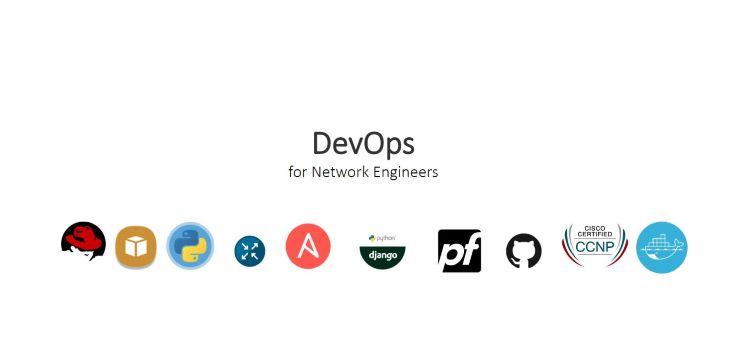

Timothy Matara
A Journey into Networks and DevOps
What I have been doing
2017 December
Network Support Engineer - Safaricom PLC
- Network Security, by hardening router and server configurations and mitigatin of cyber threats
- Performance tuning of uplinks, testing and evaluating installations by vendors
2016 December to August 2017
Network Support Engineer - IwayAfrica Kenya
- Support regiona VSAT and WiMAX installations
- Monitoring real time systems and faulting with service providers to guarantee uptime
Git Projects

Having a networking background, DevOps presents new and unique opportunities to engage varying skills. A person must constantly keep learning new technologies to keep up with the business demands. This is a simple page that summarizes some of the new skills expected of network engineers now turned DevOps.
Let me build your DevOps infrastructure.
© 2020 Timothy Matara. All rights reserved.